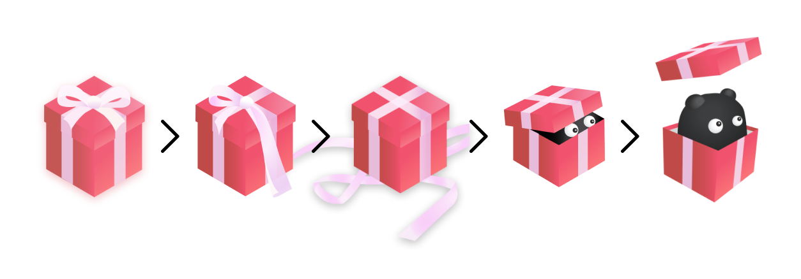
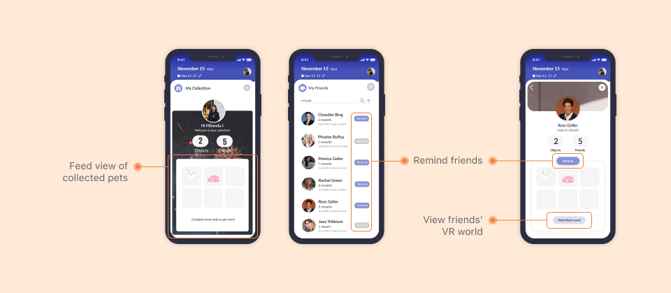
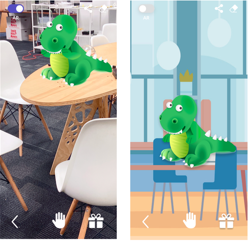

Background
Problem
Along with the rise of technology, people are faced with an
increasing amount of distractions as they try to do their work
productively. Existing apps fail to incentivise users to stop
procrastinating.
Insight
Students procrastinate due to a wide variety of reasons, but a
prevailing reason was to provide pleasure outside of academic stress.
Students seek pleasure and begin to procrastinate to release stress.
Outcome
We created a gamified task completion experience to combat
procrastination. This is marketed as a productivity app and it
leverages theories on psychology and design to increase a user’s
pleasure surrounding their work.
Solution
A Different Approach
Our team takes a different approach to procrastination than other
productivity applications: rather than focusing on simply getting
tasks done, we hope to make the environment surrounding the task more
enjoyable through internal and external rewards to motivate users to
accomplish their tasks.
Junto
Junto is an app that introduces rewards to users when they
accomplish tasks; these rewards are presented in the form of
unlocking and revealing mystery objects, collecting these objects,
and placing these in a virtual world or augmented reality (AR).
We also incorporated features to leverage social influences to
reduce academic procrastination.
Behind the Name Junto
The Junto (from the Spanish word for assembly - junta) was the name
of a club that Benjamin Franklin formed in 1727. Benjamin Franklin,
aside from being one of America’s Founding Fathers, was well known
for his wit and famous phrases. Some of his best-known phrases have
to do with combatting procrastination and making the most of one’s
time. For example, Franklin is quoted to have said “never leave till
tomorrow that which you can do today” and “you may delay, but time
will not, and lost time is never found again.”
Features
Unwrapping Animation of Gift Box
Law, Yin, Goh, Chen, Terry, & Gajos (2016) explored using curiosity
itself as a way to motivate behavior. They found that curiosity
could serve as a form of intrinsic motivation to incentivize
crowdsource workers to complete more tasks, without negatively
affecting performance. Junto uses curiosity as motivation and
leverage insights from goal progress theory and self-regulation
theory of goal striving by displaying a mystery gift box unwrap
in stages as users complete tasks (see Figure 1). We also applied
self-awareness theory by allowing users to enter into self-awareness
when they see the box on the home screen. The box adjusts to the
progress made, so users can clearly see if they are making progress
based on the visual status of an unwrapped present. In designing
the app, we intended for the progress to be encouraging for the user,
such that they match their behavior to their desired outcome, to
reveal the contents of the present by accomplishing their tasks.

Social Features
Research by Ferrari, Harriot, & Zimmerman (1997) has shown that
anti-procrastination tendencies were correlated with higher levels
of social satisfaction from peers and family. Lockwood and Pinkus
(2008) have shown that social comparisons have the ability to change
people’s goals and actions, and suggest that the continued presence
of positive role models could have the ability to continually motivate
one to achieve a difficult goal. Because course work could seem very
daunting, we wanted to incorporate this social element into our game
to motivate users to complete their goals. In Junto, users can view
the objects that others in their social group have achieved (see
Figure 2). Users can get a sense of how productive their friends are
and can be motivated by others’ progress. Additionally, to enable
friends to help each other out, we incorporated a “remind” feature
where a user can remind their other friends to complete their tasks.
This is an element of Junto that we did not extract from research,
but this was implemented based on informal recommendations from user testing.

Augmented Reality
Ibáñez, Peláez, Jorge, & Delgado-Kloos (2019) experimented with using
augmented reality as an incentive to overcome procrastination with
positive results. Their experimental learning task was to require
students to correctly answer 4 multiple choice questions in order to
capture characters in AR. Our approach was to allow a user to display
their already captured characters in AR, but we used Peláez, Jorge, &
Delgado-Kloos’s research as a springboard to incorporating AR as a way
to avoid procrastination, and we found positive effects from our user
testing feedback.
By using AR, a user can see and interact with their object in “real
life.” This was a way of making the prize more “real” after some
early users felt a virtual prize would not be enough of a tangible
reward to motivate them to complete tasks. This element also furthers
the enjoyment aspect of Junto. This was one of the most popular
elements of our user testing, and participants expressed their
happiness and satisfaction with the cuteness of the item. In addition,
users may view their collection of mystery objects in the virtual world.

Theories Applied
Gamification
Gamification has been defined as the use of “game-based mechanics,
aesthetics, and game thinking to engage people, motivate action,
promote learning, and solve problems.” (Kapp, 2012). Alsawaier (2018)
conducted a literature review that included past research which has
shown that gamification has fostered motivation and performance in a
wide range of activities. Specifically, we wanted to incorporate
gamification into our app to encourage our users to accomplish their
goals and avoid procrastination. Junto involves making each
individual tasks into a sort of game - users complete one task to
unlock part of a prize.
Outcome-Focused
In their paper, Kraus & Freund (2014) studied how rewards can deter
procrastination. The act of procrastinating often serves as a reward
by providing relief from stressful or undesired activity. In order to
counteract how procrastination serves as a sort of inherent reward,
Kraus & Freund demonstrated that when faced with an unpleasant task,
shifting the focus from the task to the outcome can actually reduce
procrastination. We incorporate elements of this approach by offering
a type of reward for performing each task to shift some of the focus
from the unpleasantness of the task to the ensuing reward. In Junto,
completing a task provides immediate feedback in the form of a reward.
The user will thus shift their focus from completing arduous tasks to
unlocking the rewards.
Self-Regulation Theories of Goal Striving
Wieber & Gollwitzer (2010) write that there are four problems that
must be overcome for successful goal striving. First, people must
overcome the initiation of action on a goal. In Junto, users can
easily create tasks and sync tasks with a calendar like Canvas or
Google Calendar. Second, people also have to overcome distractions
and have to stay on track with the goal. To overcome this problem,
Junto aims to increase the pleasure surrounding work or the situation
surrounding work by enabling users to collect motivating mystery
objects. Third, users must also disengage from failing courses of
action. Failure to accomplish tasks should not hinder users from
continuing progress with the goal. Junto aims to address this by
providing motivation and pleasure that is enough to avoid
counter-productive tasks. Fourth, people have to overcome the
avoidance of overextension and ego depletion. To combat ego depletion,
Junto allows users to review the amount of progress they have made
through the collection page.
Design Principles
The IBM Nudge Library also suggested design principles to use in order
to achieve the desired behavior. Junto uses an appeal to emotions by
designing cute mystery objects and implementing an easy user interface
with light colors. Anticipation is built by having a slow reveal of
the mystery object and only fully revealing it when all the tasks have
been completed. Progress in tasks can be shown through the unwrapping
of the present on the home screen. Habit cycle is formed by creating
tasks (cue), completing tasks on time (action), and receiving a
revealed mystery object (rewards).
Reflection
Closing Thoughts
By working on Junto, I learned a number of things, both from an
academic and personal perspective. First, I learned to take
constructive criticism and be quick to iterate on designs.
Through user feedback and Professor Kaufman’s feedback, I saw how
making changes based on these feedbacks significantly improved our
application. Second, I learned how to apply design and psychological
theories through games. This project enabled me to gain research
skills and successfully apply theories to design, all the while
making the game user-centered. Third, I learned how to work alongside
people who were at different stages of life. Working with graduate
students of the HCII has enabled me to communicate better and be more
diligent with my work as well. Overall, this project was difficult
given the quick timeline, but I really enjoyed it and I hope to
continue building on this project in the future.